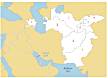

Texte du Header
Lien 1 | Lien 2 | Lien 3
Une photo de…
premier titre
un paragraphe
Hello 3
Hello 2
Hello 3

Votre navigateur ne supporte pas la balise audio
Votre navigateur ne supporte pas la balise video
Texte pour les navigateurs qui ne supportent pas canvas
Texte pour les navigateurs qui ne supportent pas canvas